July Papers: All About Scaling
Scaling continues to be a super hot topic of research and our selection of papers for this month all tackle different angles of how to scale models efficiently.
The first paper we cover builds upon the work of muP to give a guide of how we can transfer hyperparameters optimised on small models to the large models we care about, especially as transformer width increases.
Our second chosen paper looks at scaling mixture of expert transformers along the expert dimension. They design an efficient routing strategy that allows them to push the expert number to the extreme for a more compute optimal configuration.
The third paper we discuss addresses the lack of scaling laws for vocabulary parameters in LLMs. They first validate that there exists an optimal vocab size for a given compute budget and then empirically fit power laws to show that vocab parameters should be scaled differently to the other parameters of the model.
Finally, our fourth paper answers the question of whether using long context lengths or retrieval augmented generation is better for scaling in-context learning and if a combination of the two could lead to more efficient inference.
I hope you enjoy these as much as we did. If you have thoughts or questions, keep the conversation going @GCResearchTeam.
We hope you enjoy this month's papers as much as we did! If you have thoughts or questions, please reach out to us at @GCResearchTeam.
Scaling Exponents Across Parameterizations and Optimizers
The key idea
Our field has an insatiable desire to build ever-larger language models. From this, there's an increasing need to predict how training will behave as model size is scaled up: How do we know that our hyperparameters chosen based on small models will continue to work on large ones? This work builds on the foundation of muP (Yang et al.) to explore parameter transfer as transformer model width increases.
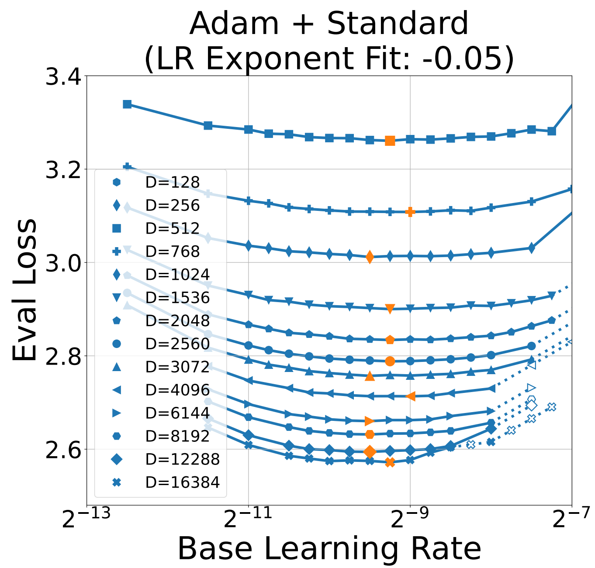
Their method
The principle is to ensure that activations remain at a constant scale (RMS) as model width \(n\) increases, at initialisation and during training. To do this, insert scaling factors to parameter initialisation, as a multiplier on the parameter and on the learning rate. I.e.
(Note: \(A = n^{-a}\), \(B = n^{-b}\), \(C = n^{-c}\) from the paper.)
A parametrisation defines the scaling factors \(A,B,C\) in terms of \(n\). The paper investigates four parametrisations: Standard (STP), NTK, muP and Mean Field (MFP). However, they show that these fall into two classes that should behave similarly and propose a new orthogonal variation "full alignment" versus "no alignment". This is shown in Table 1 and Figure 1 in the paper, but we can simplify it for this summary:
The key properties of a parametrisation are \(A \cdot B\), since this defines the weight scale at initialisation and \(A \cdot C\) (for Adam) which defines the size of an update. Expanding these based on Table 1, we get:
| Weight type | Parametrisations | Init \(A \cdot B\) | Update \(A \cdot C\) (Full align) |
Update \(A \cdot C\) (No align) |
|---|---|---|---|---|
| Embedding | {STP, NTK, muP, MFP} | \(1\) | \(1\) | \(1\) |
| Hidden | {STP, NTK, muP, MFP} | \(1/\sqrt{n}\) | \(1/n\) | \(1/\sqrt{n}\) |
| Readout | {STP, NTK} | \(1/\sqrt{n}\) | \(1/n\) | \(1/\sqrt{n}\) |
| Readout | {muP, MFP} | \(1/n\) | \(1/n\) | \(1/\sqrt{n}\) |
The two classes {STP, NTK} and {muP, MFP} therefore differ in their readout initialisation, with the muP class claiming that this should be smaller than the STP class, as the model scales. This is because muP assumes alignment between the initial readout parameter values and the change in the readout layer input (i.e. the term \(W'^{(0)} \Delta z\), where \(z\) is the input to the readout layer), over training.
Considering another form of alignment, the authors explore two extremes of the alignment between parameter updates and layer inputs: "full alignment" which says \(\|\Delta W' z\|\) scales like \(n \cdot \|\Delta W'\| \cdot \|z\|\) and "no alignment" which says it scales like \(\sqrt{n} \cdot \|\Delta W'\| \cdot \|z\|\).
From the table above (and Table 1), assuming no alignment implies larger learning rates than full alignment, as model width is increased.
Results
The paper's experiments on scaling language model transformers are expansive, so we can only give a quick overview of the highlights.
First, all parametrisations can give good LR transfer across width; under the full alignment assumption, when using Adam:
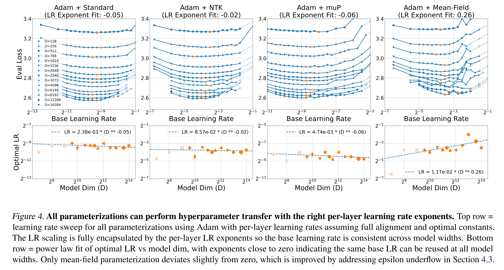
Compare this with the no alignment assumption, which doesn't give good transfer with plain Adam:
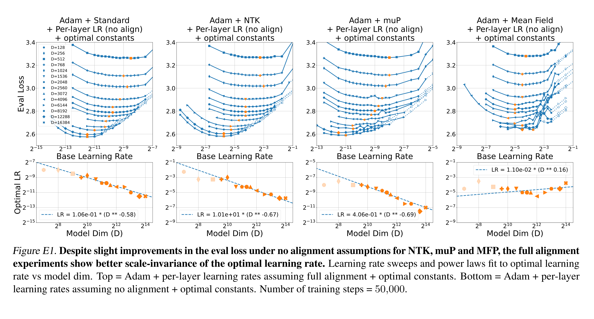
However, their results when introducing parameter scaling (Appendix L), where the update is multiplied by the parameter magnitude, show a mixed picture. In this case, reasonable transfer is achieved with either full alignment or no alignment scaling.
The experiments treat parametrisations separately, even though the theory has shown an equivalence in two classes. Since the authors identified that the Adam epsilon parameter is important (while it doesn't factor into the scaling assumptions), they tried various schemes for fixing it, including a novel scheme where \(m/\sqrt{v + \epsilon}\) is replaced with atan2(m, sqrt(v)). All schemes worked, fixing the visible scaling regression for NTK and MFP. They also made the results for two classes of (STP, NTK) and (muP, MFP) line up, which is very satisfying:
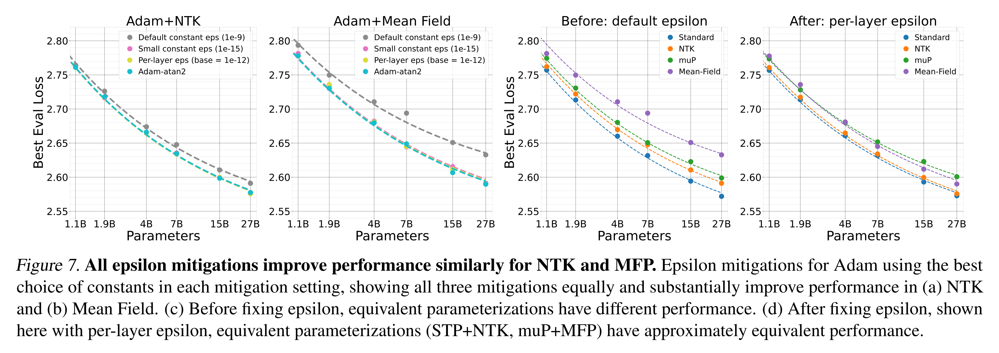
Takeaways
This work helps to clarify the similarities and differences between STP, NTK, muP and MFP (although the paper has simplified some, e.g. muP, to fit them into this framework). It has also highlighted where alignment assumptions are being made and questioned their validity.
The comprehensive experiments show that many factors can influence transfer results, such as parameter scaling in optimisers like Adafactor and the choice of Adam epsilon. Finally, the Adam-atan2 method is a neat way of working around the question of how to choose epsilon when the gradient scale varies.
Addendum
It's impossible for me to avoid a comparison with our own experience of adapting muP in u-μP (Blake and Eichenberg, et al.), which shares the muP class w.r.t. readout scaling, but introduces a \(1/\sqrt{n}\) scale to the embedding LR, unlike all of the schemes above. It is quite similar to MFP from this work, but unit-scaled μP avoids the poor gradient scaling that MFP experiences, by allowing gradients to be scaled independently from activations. Otherwise, our work pursued a different objective, removing the base width and coupled hyperparameters of muP.
Mixture of a Million Experts
The key idea
Mixture-of-expert (MoE) layers are a popular choice for replacing burdensome MLP layers in Transformers. Standard approaches tend to stick to small expert counts (e.g., 8 or 16), as this permits straightforward, scalable implementation in tensor-parallelised distributed training settings. However, previous work suggests that a more compute-optimal configuration would be to use many small experts. In this work, the author designs an efficient routing strategy that allows them to test this hypothesis to the extreme.
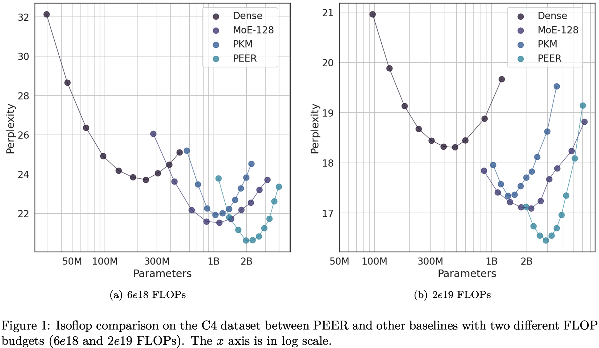
Background
It is not immediately obvious why many small experts should be compute-optimal, however starting from a scaling law for MoE developed in previous work we see that test loss is expected to follow
\(\mathcal{L} = c + \frac{g}{G^\gamma + a}\frac{1}{P^\alpha} + \frac{b}{D^\beta}\)
where \(P\) is the total number of parameters, \(D\) is the number of training tokens, and \(G\) is the number of active experts. \(G\) is further defined as \(G = P_{active}/P_{expert}\), i.e, the number of parameters used per token divided by the number of parameters per experts.
Ideally we want to keep \(P_{active}\) small as this limits cost of transfers from main memory. However, we also want increase \(G\) and \(P\) since these will reduce test loss. To do this, we increase \(P\) but decrease \(P_{experts}\) according to a limited \(P_{active}\). This implies employing many small experts rather than few large experts should result in a better trade-off for decreasing test loss.
Their method
To actualise this idea, the author proposes the Parameter Efficient Expert Retrieval (PEER) layer. This design makes a few key choices:
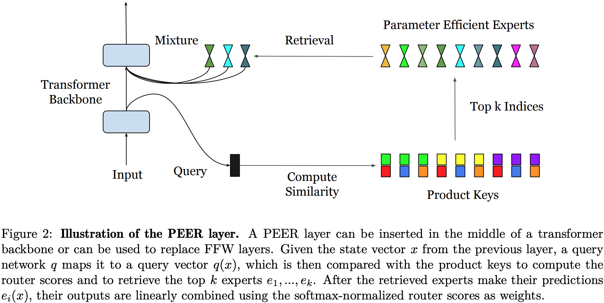
- Experts are MLPs with a hidden size of 1 (Singleton MLP). This means \(G\) is always as large as it can be for a given limit on \(P_{active}\).
- Expert weights are constructed by concatenating weights from 2 "sub-experts". This enforces a degree of parameter sharing across experts, but permits cheap retrieval from
2*sqrt(num_experts)rather than expensive retrieval from fullnum_experts. - Multi-headed structure used in previous work, in which inputs are projected to multiple queries, and each query retrieves many experts. Since outputs are summed across heads this is effectively like building an MLP from a larger pool of possible weights for each input.
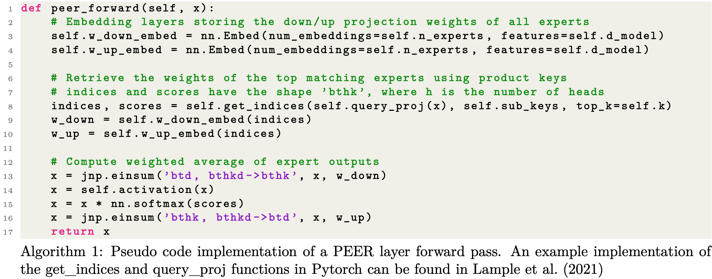
Results
To characterise the compute trade-offs of using the PEER layer, the author uses iso-FLOP analysis in which total FLOPs are kept constant by trading training tokens for parameter counts. At first glance it looks like a clear win for PEER layers against dense baselines and other MoE architectures with smaller expert counts. The dense baseline looks a bit high for transformer architectures and datasets used in 2024 (would expect perplexity < 10 for 2e19 FLOPs), but appears to be consistent with the setup used for Chinchilla.
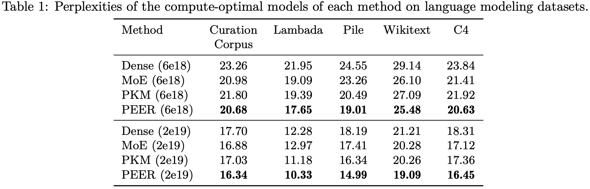
A common worry with using MoE layers is load-balancing across experts. A further concern as you increase the number of experts is whether some experts are being used at all. They show here though that expert usage is 100% (or near enough). There appear to be some issues with load balancing, but using batch normalisation over queries appears to help balance experts while actually improving test loss. This is useful to know given that regularisation strategies commonly used to encourage load balancing often harm test loss, but are needed to maintain higher throughput. I'm a little skeptical here as perplexity for this experiment is a fair bit higher. I'm guessing this is just because the author didn't train for as long to perform ablation, but couldn't see specific details.
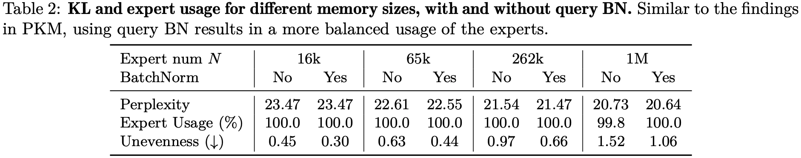
Takeaway
This is an exciting line of work that has plenty of implications for how we attach memory to compute. While these results seem to be part of a work-in-progress, this is sufficient for me to want to try out in my own time and convince myself that these efficiencies are real and scaleable!
Scaling Laws with Vocabulary: Larger Models Deserve Larger Vocabularies
The key idea
Scaling laws (e.g. Kaplan, Chinchilla) have proved enormously useful in showing how to most efficiently scale LLMs for a given FLOPs budget but these scaling laws have generally only considered non-vocabulary parameters. This paper attempts to address that issue by calculating scaling laws for the vocabulary parameters and finds that many public LLMs are underparameterised for vocabulary. The authors use three complementary approaches to fit a power law: IsoFLOPs analysis, derivative estimation and parametric fit of the loss function. They show empirically that vocabulary parameters should be scaled with model size but at a slower rate than non-vocabulary parameters.
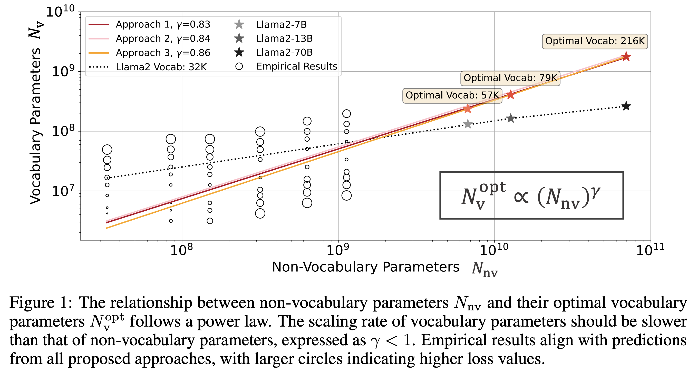
Their method
The authors use three complementary approaches in the paper. Firstly they use an IsoFLOP analysis wherein a series of models with varying vocabulary parameters were trained with fixed FLOPs and fixed non-vocab parameters. Observing the vocab size at minimum loss for each FLOP budget allowed them to fit power laws for vocab size and non-vocab parameters.
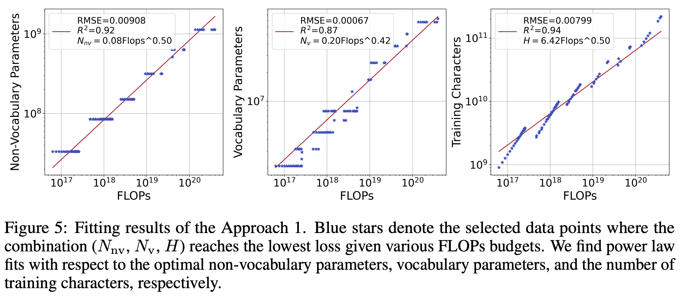
The second approach uses a derivative based method wherein a formula is derived for flops based on a derived formula for FLOPs based on both vocabulary and non-vocabulary parameters as well as training tokens. Then by finding the minimum of this function with respect to vocabulary (V), they can estimate the optimal V under the assumption that it can achieve a certain loss. This feels like quite a strong assumption nonetheless the results match closely with those from approaches 1 and 3.
Finally, a third approach uses a parametric vocabulary dependent loss formula:
$ L_u = -E + \frac{A_1}{N_{nv}^{\alpha_{1}}}+\frac{A_2}{N_{v}^{\alpha_{2}}}+\frac{B}{D^{\beta}} $
The first term captures the normalised loss for an ideal generative process and the subsequent terms respectively reflect the effect of non-vocab parameters, vocab parameters and the amount of training data on the loss. Using the experiments from the IsoFLOP analysis the authors can learn the optimal parameters for the loss formula and subsequently predict the optimal vocabulary configuration by finding the minimum point of the loss with respect to the vocabulary.
The authors find that all three approaches agree closely in that non-vocab parameters should be scaled faster than vocabulary parameters.
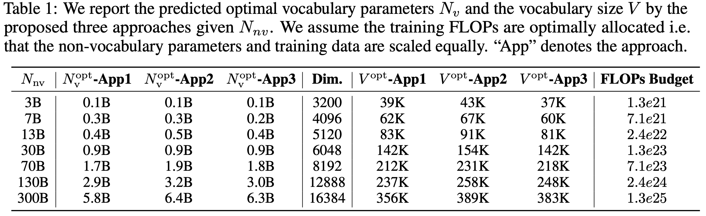
Results
The authors show their predictions in action by training 3B parameter models with their standard 32K vocab size and comparing this with their predicted optimal vocab size of 35K. They show that this leads to improvements on various benchmarks with only a small adjustment to vocab size.
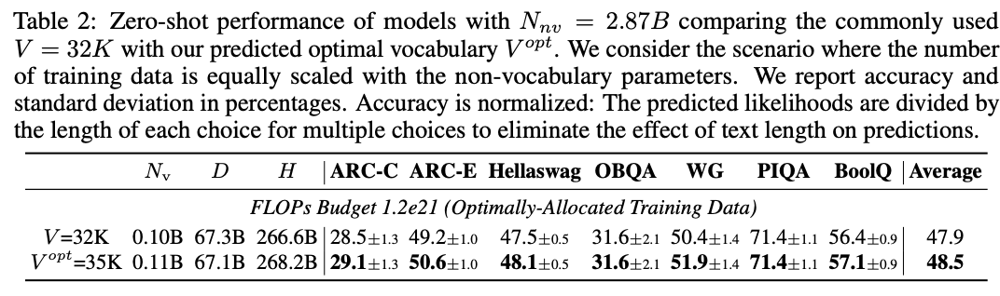
The overall takeaway is that according to their analysis, most public LLMs are underparameterised for their vocabulary and that when scaling up model size, vocab size ought to be increased too but at a slower rate than the other parameters.
Retrieval Augmented Generation or Long-Context LLMs? A Comprehensive Study and Hybrid Approach
The key idea
This paper from Google DeepMind attempts to answer the question of which is better - long context LLMs (LC) or retrieval augmented generation (RAG)? For state-of-the-art LLMs they find that LC outperforms RAG, albeit at a larger computational cost due to the quadratic complexity of attention. However, they find that for most queries, both RAG and LC generate identical predictions. Motivated by this observation, the authors propose a method to route queries to RAG or LC, reducing the cost of inference while maintaining task performance comparable to LC.
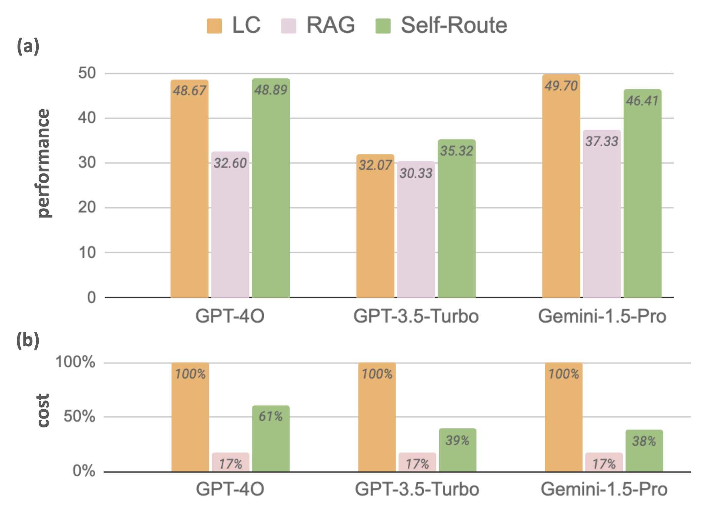
Background
An emergent behaviour in LLMs is in-context learning, in which models can retrieve and learn from information present in its context. This behaviour allows models to learn from new information not seen in its training data, without requiring fine-tuning. However, the attention operation present in LLMs has a cost that scales quadaratically with the length of the sequence, and therefore increasing the amount of context may lead to slower performance. Retrieval Augmented Generation (RAG) can alleviate some of this cost by only retrieving a subset of relevant documents/information, which is added to the prompt before the inference process begins. This permits shorter, cheaper sequence lengths, but does not allow the model to see all avaialable context during inference, and relies on a quality retrieval method to ensure that the relevant documents have been retrieved.
Their method
The authors benchmarked both LC and RAG approaches on a variety of NLP tasks and state-of-the-art LLMs, including Gemini-1.5-Pro, GPT-4O and GPT-3.5-Turbo, which support context lengths of 1M, 128k and 16k tokens respectively. The results found that in general, LC outperforms RAG, except when using datasets from \(\infty\text{Bench}\) (where RAG outperforms LC for GPT-3.5-Turbo, likely due to the model's limited context window). These results differ from previous work comparing the two strategies, but the authors argue this is due to their use of stronger LLMs and longer contexts in their experiments.
One observation they noted was that for 60% of queries, RAG and LC generate the same prediction (ignoring whether the prediction is correct or not):
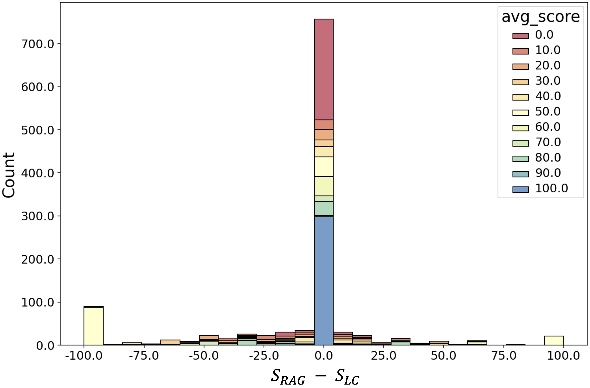
Given that RAG is much cheaper than LC (due to the quadratic complexity of attention), the authors propose a simple method called Self-Route: first check if the LLM with RAG-retrieved context can successfully answer the question, using the given provided context. If the query is deemed answerable then the RAG prediction is taken as the final answer. Otherwise, the second step is called, in which the full context is provided to the long context model to obtain the final prediction. Practically, the only changes to the RAG implementation is that the LLM is given the option to declice answering with the prompt "Write unanswerable if the query can not be answered based on the provided text".
Results
The results show that the proposed Self-Route method can obtain performance comparable to long context LLM prompting, but with a considerably reduced cost at inference time. Furthermore, Self-Route can attain better performance than RAG when retrieving fewer documents, as seen below.
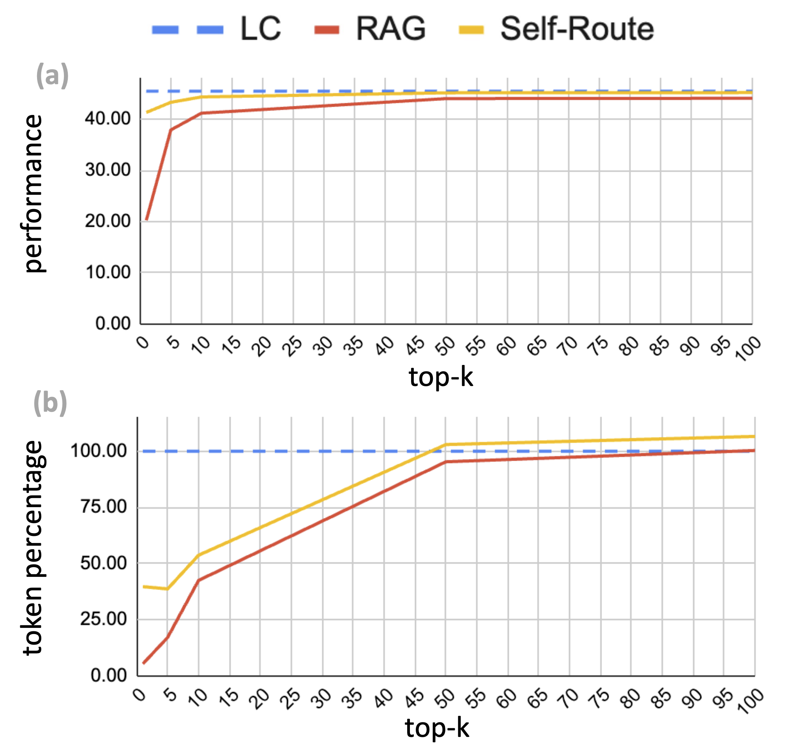